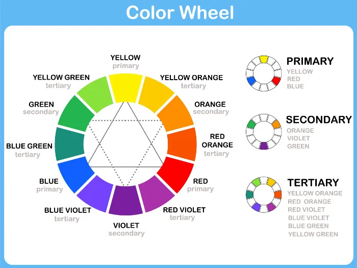

Digital Art Blog
Read our latest articles about digital art, artist spotlights and simple tips to help you start your own collection.

Understanding Colour Theory in Digital Art
Date: March 12, 2026
Colour theory is an essential part of digital art because it influences mood, emotion, and visual balance. Artists use colour combinations, contrast, and harmony to create depth, highlight important elements, and guide the viewer's attention. Understanding warm, cool, and complementary colours helps create artwork that is more engaging, expressive, and visually appealing.
Artist Spotlight: Mira Solheim
Date: April 5, 2026
Meet Mira Solheim, the talented digital painter behind our best-selling artwork, Tidewatch. Known for her rich colour palettes and layered painting techniques, Mira creates captivating scenes filled with depth and emotion. She begins each artwork with simple colour studies, gradually building texture, lighting, and atmosphere. Her creative process demonstrates how thoughtful colour choices and careful layering can transform a simple concept into a stunning digital masterpiece.

10 Tips for Starting Your Art Collection
Date: May 8, 2026
Starting an art collection doesn't have to be difficult. Begin by choosing artwork that reflects your personal style rather than following trends. Set a budget, explore different art styles, and research the artists behind each piece. Consider the size, colours, and placement before purchasing. Buy from trusted galleries or platforms, and take your time making decisions. A carefully chosen collection will grow into something meaningful, unique, and enjoyable for years to come.
A Beginner's Guide to Generative Art
Date: June 18, 2026
Generative art is a creative process where artists use computer code, algorithms, or software to produce unique artworks. Instead of drawing every detail by hand, they design rules that allow the computer to generate patterns, shapes, and colours automatically. This approach combines creativity with technology, making every piece unique. Whether you're new to digital art or programming, understanding the basics of generative art is a great way to explore modern artistic expression.
Quick Collecting Tips
Keep Your Certificate
Always store the certificate of authenticity that comes with a purchased artwork.
Protect From Sunlight
Hang printed artwork away from direct sunlight to protect the colours over time.
Follow the Artist
Following an artist's page helps you learn about their next collection before it sells out.
Blog Categories
| Blog Categories Overview | ||
|---|---|---|
| Category | Articles | |
| Published | Status | |
| Artist Spotlights | 14 | Active |
| Colour & Composition | 9 | Active |
| Generative Art | 7 | Growing |
| Collecting Guides | 11 | Popular |
| Gallery News | 18 | Updated |
| Total Articles | 59 | |